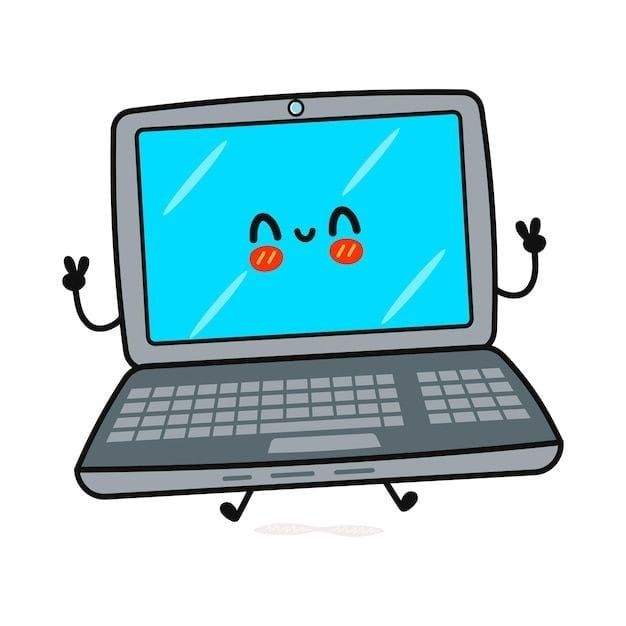
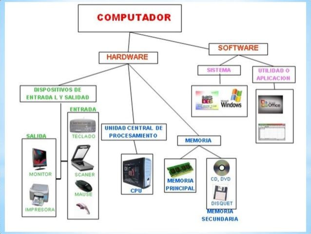

Introduccioń a la computación
La computación es el proceso de ejecutar comandos y realizar cálculos en una computadora u otro dispositivo electrónico para procesar datos, resolver problemas, ejecutar algoritmos y almacenar información

La computación es el proceso de ejecutar comandos y realizar cálculos en una computadora u otro dispositivo electrónico para procesar datos, resolver problemas, ejecutar algoritmos y almacenar información
Tiene diveras componentes y funciones, como procesamiento de datos, ejecucioń de algoritmos, almacenamiento de informacioń, hardware y software.

La computacioń es fundamental en diversos campos: